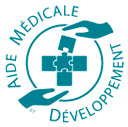
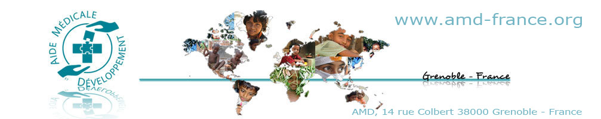

Pour accéder à la base de données, cliquez sur le logo ci-dessus.
Programme de lutte contre le handicap lié au rachitisme au Bangladesh : Blog
AVERTISSEMENT
Toutes les informations présentent dans la base Cryptomedic sont strictement confidentielles ;
elles sont donc à usage interne des membres de l'équipe médicale concernée par ce programme.
Toute exploitation des données (recherches, publications, statistiques, etc.)
doit avoir préalablement reçu l'accord des responsables de cette base de données.
Pour toute question, contactez Aide Médicale et Développement (à l'attention du Docteur Craviari)
La base de données médicales CRYPTOMEDIC est en conformité avec la Loi informatique et liberté : Informations
WARNING
All the informations included in the data base Cryptomedic are strictly confidential;
the datas will be used only by the medical team concerned by this program.
The utilisation of these datas (research, publications, statistical analysis, etc...)
must have recieve preliminary agreement of the head of this data base.
For any question, please contact Aide Médicale et Développement (Docteur Craviari)
The medical data base CRYPTOMEDIC is in accordance with the low "informatique et liberté" : Informations

Directeur de Recherche : Dr Thierry Craviari
Développements et hosting : Jean Honlet
DNS : Philippe Raybaudi